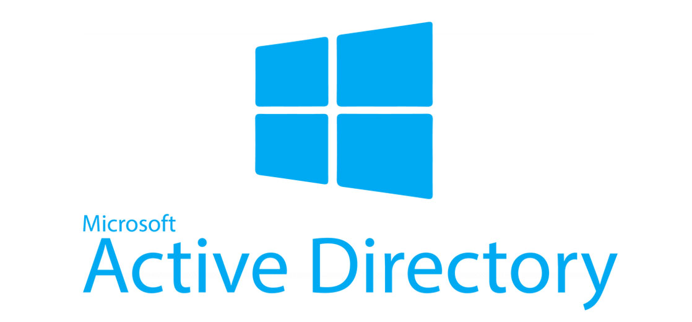
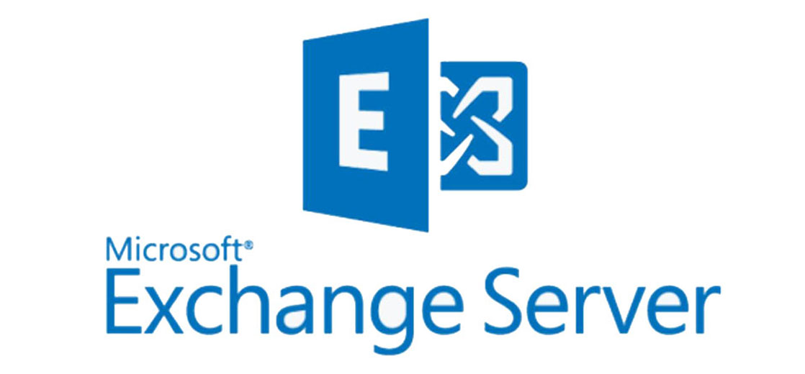
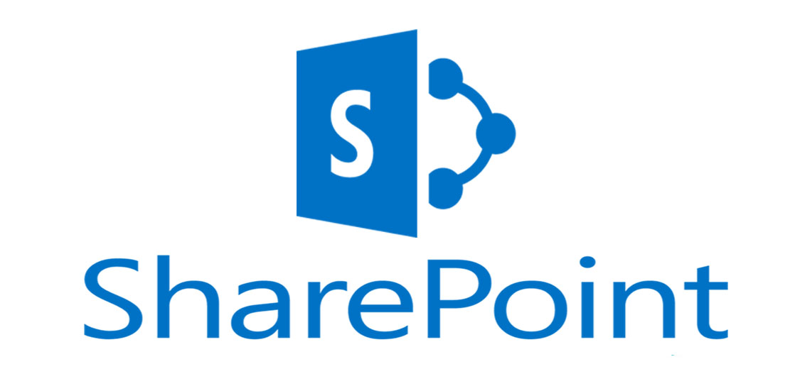
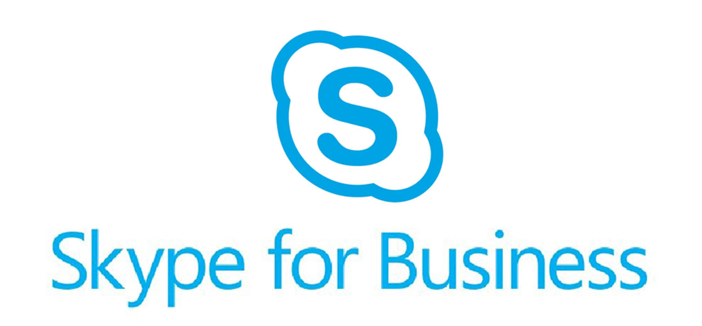
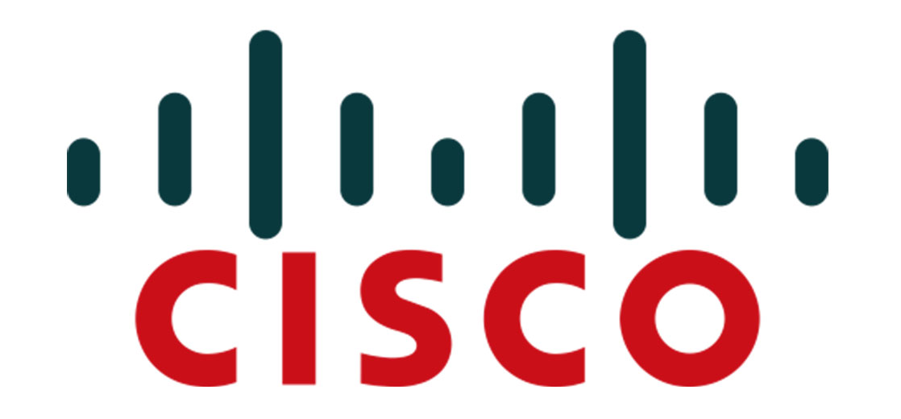

Services et technologies
Mes compétences incluent des sujets tels que l’administration des systèmes Windows et Linux, la gestion et la sécurisation des réseaux informatique, la virtualisation, le cloud computing.
Je possède également des connaissances en programmation web et mobile, notamment en utilisant les langages de programmation comme HTML, CSS, JavaScript, PHP, Python et le Framework Django. Je me sens donc à l'aise pour travailler sur des projets liés à ces domaines.
Ci-dessous se trouve une sélection de technologies dans lesquels je peux vous apporter mon expertise.
|  | |
Domaine d'entreprise
Vous souhaitez créer et implémenter l'infrastructure Active Directory de votre entreprise ? |
|
|  | |
Messagerie professionnelle
Vous avez des difficultés à mettre en place une solution de messagerie Exchange Server ? |
|
|  | |
Solution de collaboration
Vous rencontrez des problèmes pour mettre en place la solution SharePoint de Microsoft ? |
|
|  | |
Solution de visioconférence
Vous avez du mal à implémenter votre solution de visioconférendce Skye Fo Business ? |
|  | |
Gestion de réseaux informatique
Vous voulez sécuriser et améliorer la performance de votre réseau informatique ? |